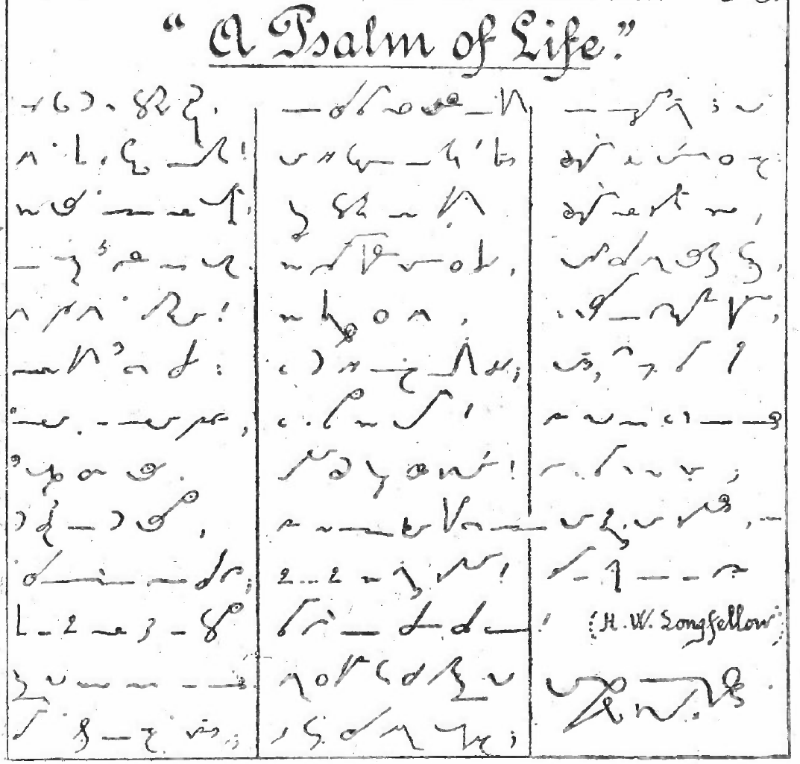

Brandt’s Duployan

Welcome to Brandt’s Duployan.
This is an adaptation of the French Duployan shorthand system to English by Carl Brandt, a Jesuit monk, who also did adaptations of Duployan to Danish and to Latin.
Duployan shorthand is classified as a geometric, alphabetic shorthand, meaning that it is constructed of lines and circles, and it does not feature any shading (thickening of the line).
Duployan shorthand was created in 1860 by Émile Duployé for writing French, and it most likely the most adapted system of shorthand. There are adaptations for English, Latin, Danish, Romanian, Chinook Wawa, German and Spanish.
Duployan shorthand has a reputation for being extremely easy to learn, and that is probably why it has been so widely adopted. It was the preferred system of shorthand among missionaries, especially the Jesuits.
In the Preface, Brandt writes:
In adapting to English the Méthode Sténographie Duployé I have endeavoured to retain the admirable simplicity which characterizes both its principles and outlines.
In the first part a system is offered that will enable any one of average intelligence to write from three to four times as fast as in longhand. I have endeavoured to place within the reach of “the many” a system that, to use a popular phrase, supplies a long felt want, that is to say, a system written and learnt with ease, and, most important of all, capable of being read with ease.
This is the alphabet of Brandt’s Duployan, taken from the handwritten manual:

A review of Brandt’s Duployan, from Brandt Duployan Рthe best Duployan yet? - Shorthand community on Reddit:
About the system:
There are several unique qualities not shared by other adaptations and it is (along with Pernin) the most thorough adaptation (at least based upon what is in the text) that I have looked at.
Conclusion:
After some weeks of use, I think it is fair to say that Brandt’s system has supplanted Perrault’s as my preferred Duployan adaptation. The handling of the Short U vowel, the shortcuts for ER, OUR, OUS, the well thought out and composable affixes and the unique use of position for auxiliary and modal verbs make this a very worthy addition to the list of Duployan adaptations.
The original, handwritten manual from 1904 is to be found at Archive.org: Duployan Shorthand adapted to English - 5th Edition, 1904 - Carl Brandt.
Writing sample from Part 2 of the manual, written in the abbreviated style: 
Currently, only Part 1 of the manual has been translated. Part 2 and Part 3 will be completed at some unspecified point in the future.